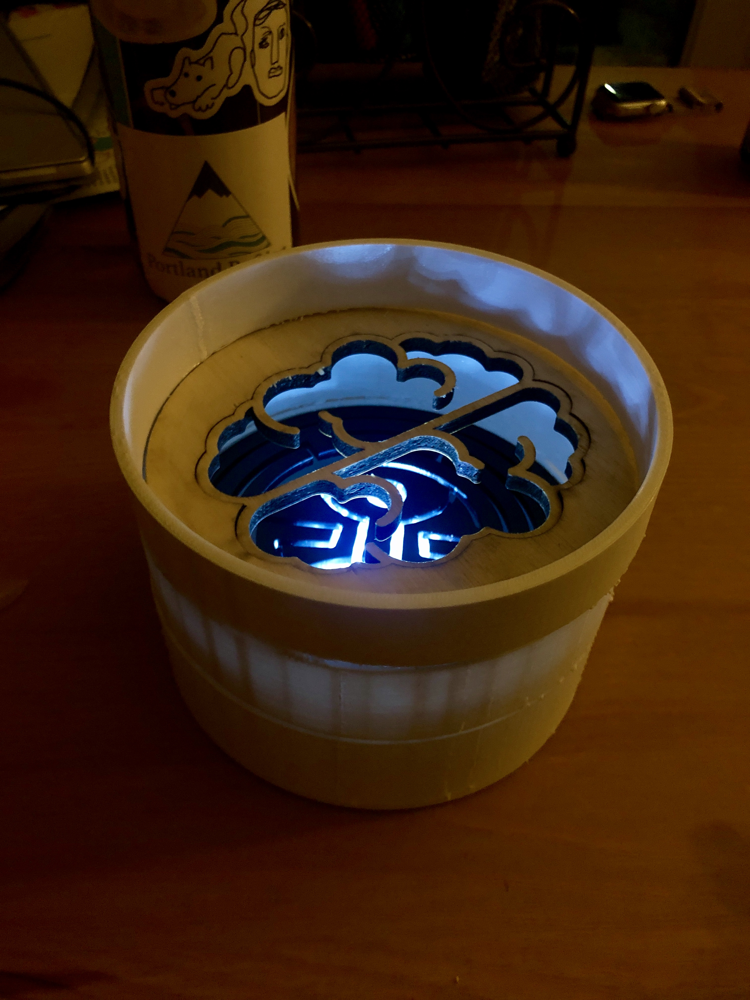
“Everything in this world is magic, except for the magician.” /i>
Westworld “Maze” Lamp
Coming in with some (maybe misplaced) confidence, I felt good about this project. I had a solid theme, and I felt like I knew exactly what I wanted to do.
The main theme of the project is based on a design that appears frequently in the HBO series, Westworld. Without spoilers, this design will mimic the pattern, while also incorporating a coexisting but contrasting design that mimics that design associated with the human brain, which embraces the concept of duality and consciousness that the show highlights.
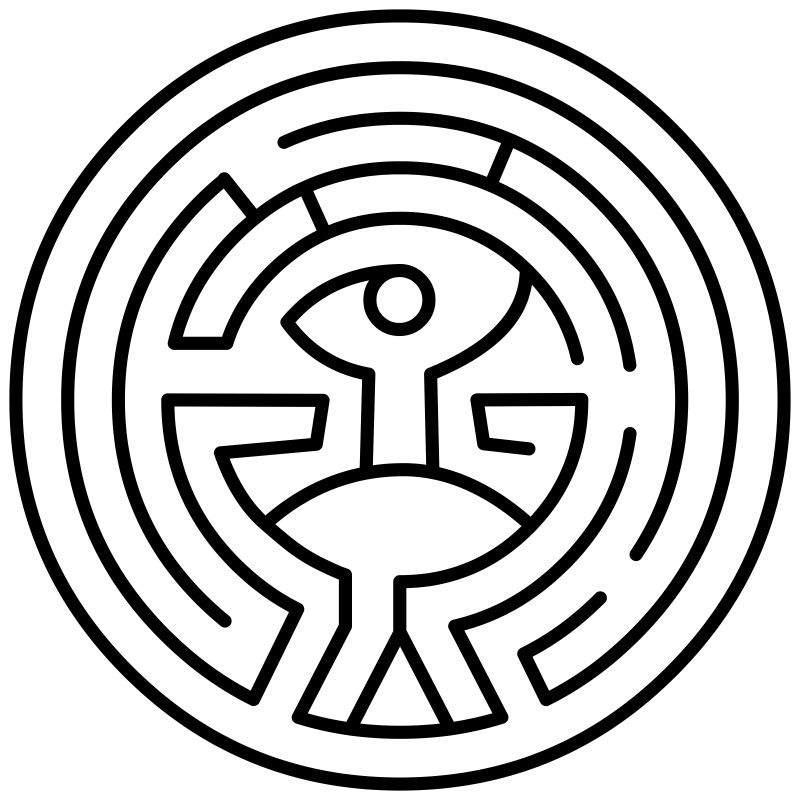
I had sourced the designs I wanted (shoutout to Reddit) and grabbed them as .SVG files so that I could make sure they vectors and would be good for laser cutting. After sourcing those designs, I moved onto the next major component, which was creating the actual lamp container.
The actual design of the lamp was very simple, it is a set of concentric cylinders (the inner cylinder was made to hold the LED lamp). The hardest part of this design was cutting the slots into the shape where the “lampshades” would slot in. Additionally, this was not a part of the design that I could create before sourcing my materials.
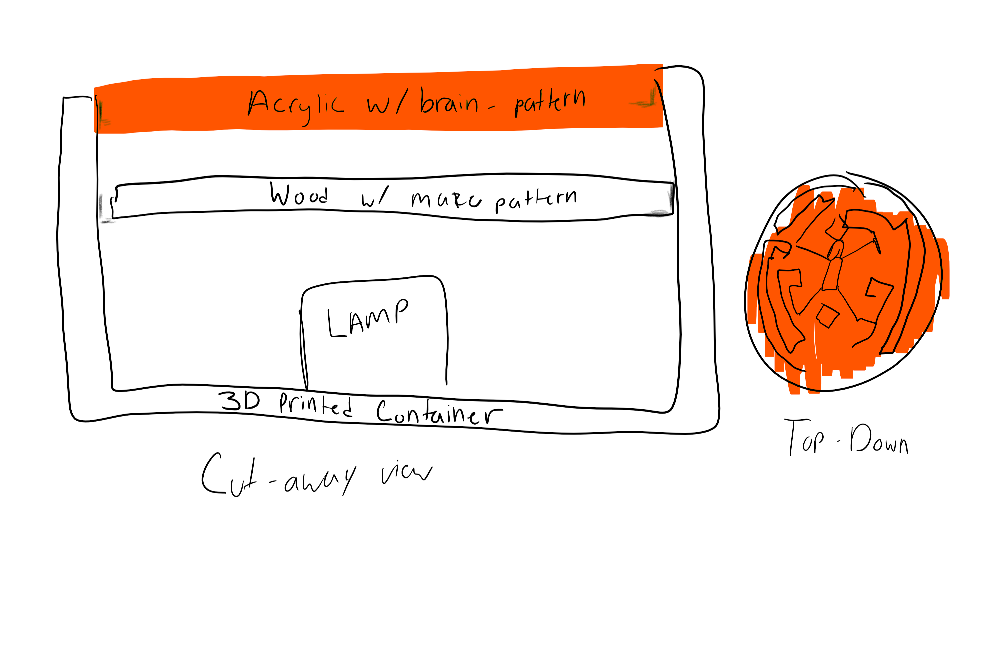
Because my original lamp project was a dud, I wanted to create something that I could have in my home as an actual physical artifact from my time in the HCDE program. I also wanted something that would be commensurate with my skill level, as I have had a hard time with a lot of the designs during this course. I figured that I actually enjoy laser cutting and 3D printing, and that those two processes would make a lot of sense to combine for a final project. Additionally, I would have to use a CAD program anyway, and the parts would have to intersect in some precise manner so that would count for interlocking parts (I wasn’t sure if interchangeable “lamp shades” would count as a moving part!).
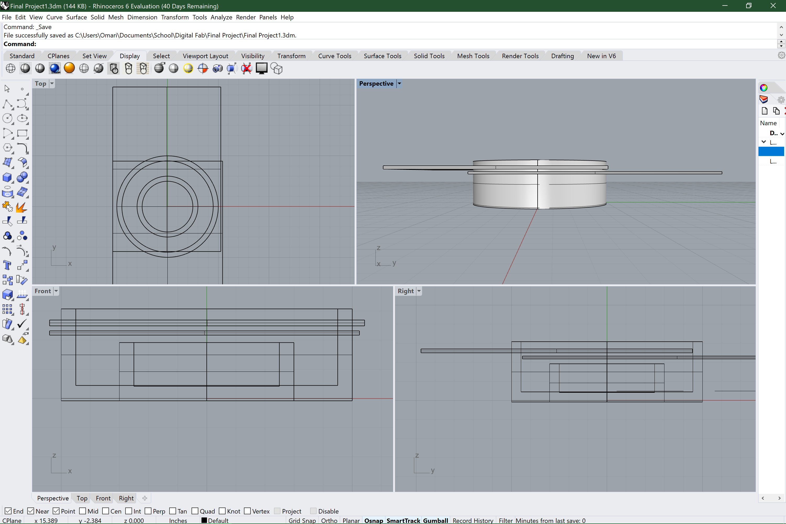
Day 1
Luckily I was able to acquire what I needed at the MILL on Wednesday night (5/29), and I was able to measure the thicknesses of the 2 materials (Acrylic = .141 inches thick, Wood = .195 inches thick). Once I had these measurements, I was able to create the slots in the material. However, in my initial designs/sketches, I did not think through the materials having differing thicknesses, so I assumed the slots would be interchangeable. With this new information, I designed the wood would be the first slot since it was thicker, followed by the acrylic. Since I would not be able to interchange the materials in the slots, I designed to duplicate both designs on both materials to allow some variety.
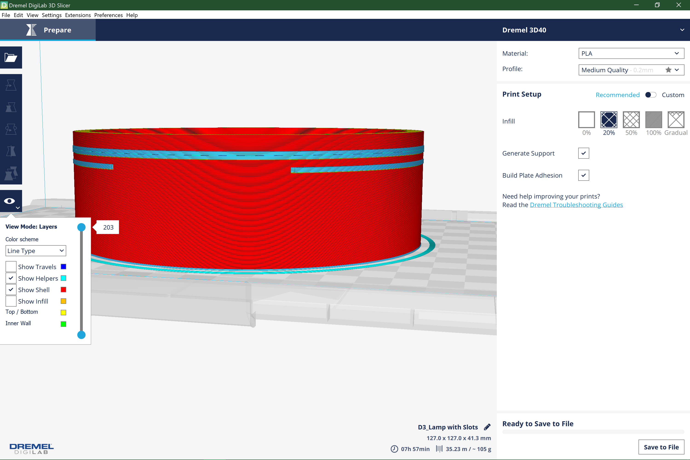
After spending all day anxiously 3D printing at the MILL, and waiting to laser cut my shades (waiting behind a sorority raster, go figure), I decided to call it quits and collect my parts the next day and be first in line at the MILL to cut.
Day 2
My print was ready, and it “turned out”, although I realized the supports started to run into each other as they did not have enough layers in between where the open slots were supposed to be. I figured I could clean it out with a razor, but that would be time consuming, potentially dangerous, and I would lose some precision with the fit. Additionally, the layers were very stringy and just not looking 100% anyway. I kept that part as a just in case, but made some edits to my file to make the cylinder bigger, and adjust the spacing between layers to account for the supports.
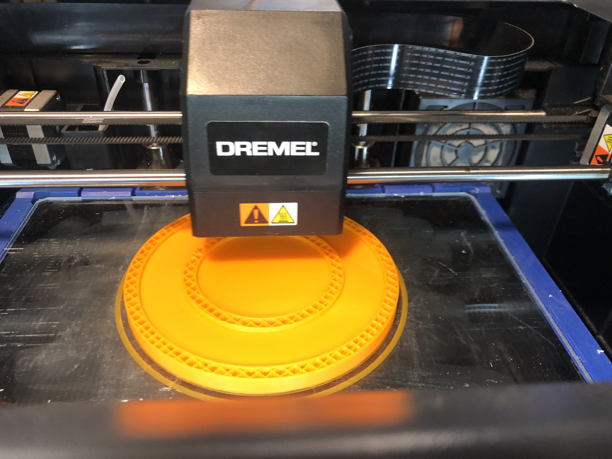
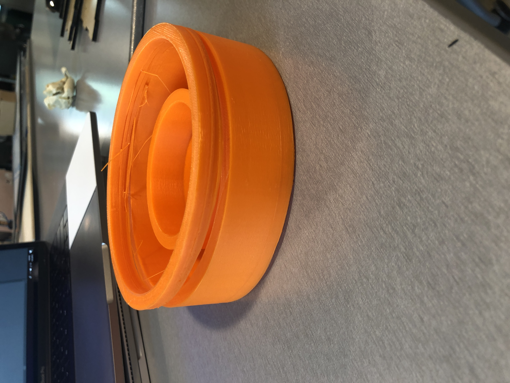
Simultaneously, I was able to laser cut both the acrylic and wood without issue. I realized that I had some options in terms of what I wanted the designs to be, so I had duplicates of each design, and started to play with how I wanted the light to shine through. I also verified that the thicknesses in my design were accurate using my slightly busted original print.

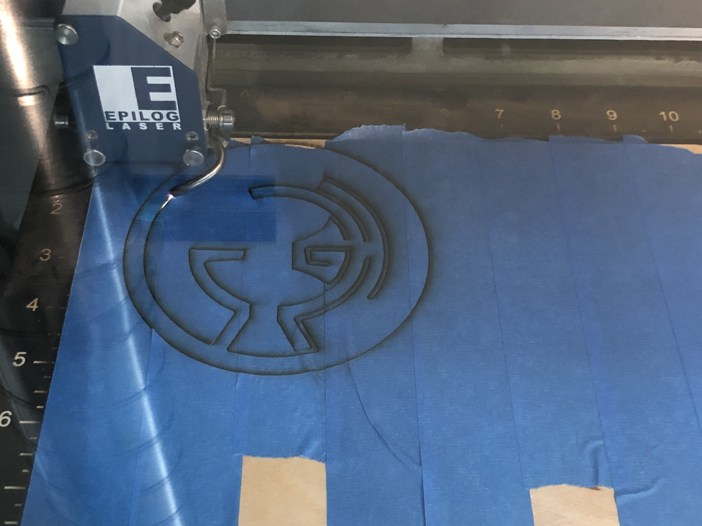

Day 3
High hopes today! The Fluke slicer for the 3D printer already generated more supports for this print that made me hopeful that it would lend better for the slots. I also got the print time down from 8 hours to 4 by reducing the quality but keeping the infill at 20%. This lamp holder does not need to be super strong as it won’t be stressed that often, and I’d rather have it quicker if possible.
However, I realized after I sent the redesign to print, that it did not scale properly, and therefore I would have to stop the print to quickly resize the file and re-print. I did this without incident, and once again crossed my fingers for the 7 hour print job that I would leave overnight!
Day 4
The print turned out. It definitely needed some… “finishing” by my “sharp edged material refinement device”, also known as a knife, but the job got done!
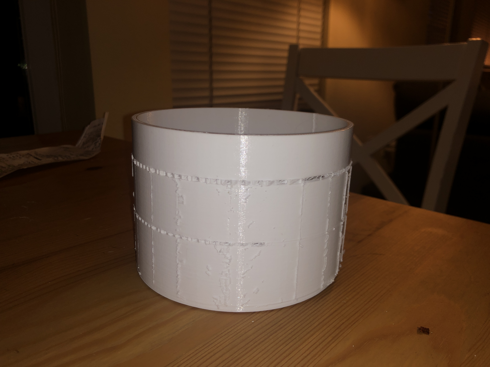
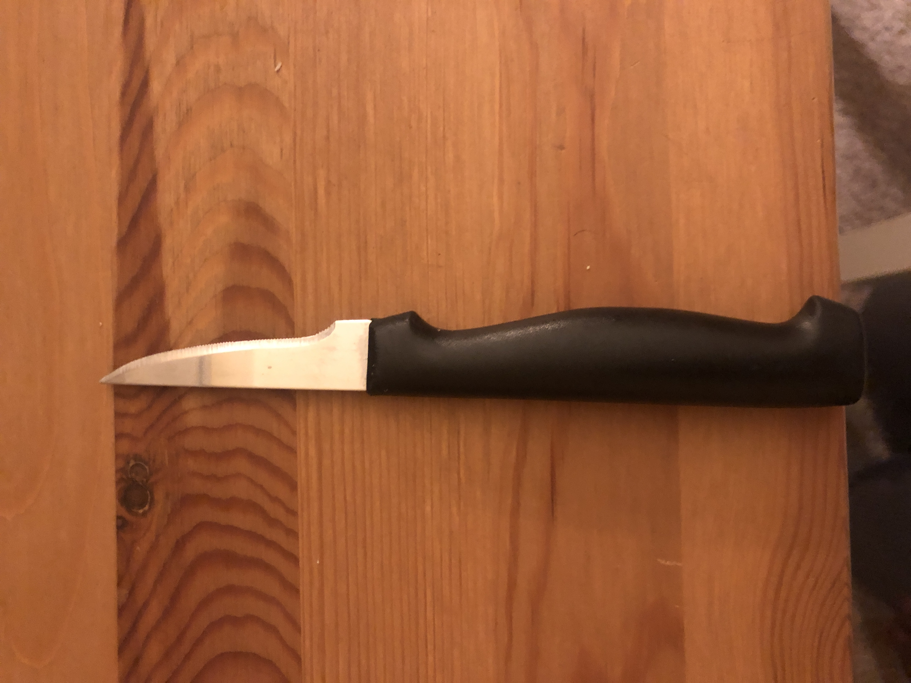
Unfortunately, with this second print, for some reason the scaling did not include the interior cylinder that was meant to hold the lamp. Luckily this is not a critical feature for the design, but it definitely was a bummer that it would not fit as intended.
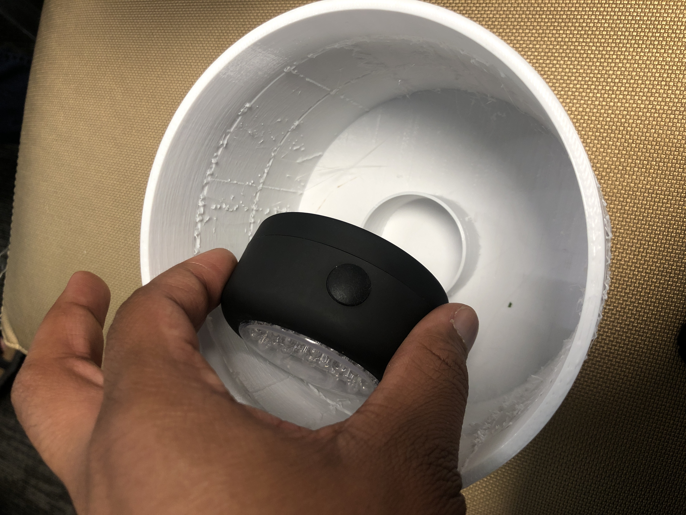
I spent a good amount of time cleaning up a lot of the supports and opening up the slots to fit in the shades. It seems that with this second print, the different structure of supports really worked in my favor, and allowed me to carve out slots for the shades.
After some further cleanup and placements, I ended up with an actual THING
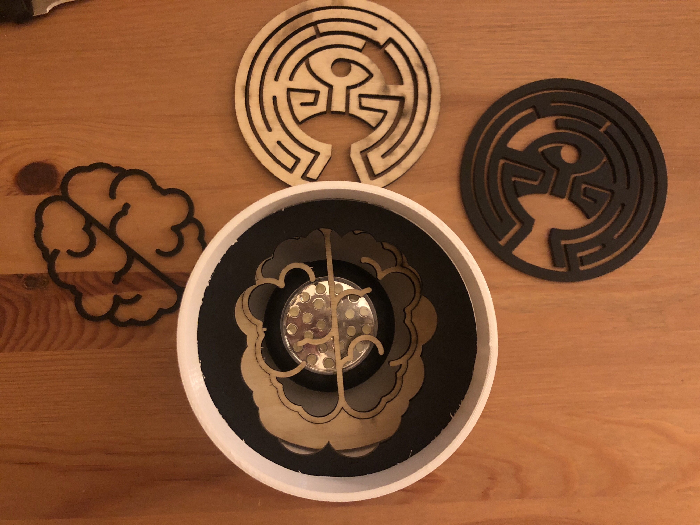
Reflection
I actually followed my timeline on this project, and I have to say having a clear plan (proposal), bill of materials, and task breakdown was super helpful for helping me just focus on designing and fabricating. I also enjoyed not having to sweat as I built in enough time to work on my project and account for things like having to re-print for 7 hours.
I will say I also do appreciate the constraints of 3D printing, both with the design (and how crucial supports were) and the fact that it forces me to spend my time wisely. While my design was relatively simple, I did have to account for a lot more, and ultimately my shades were a smidge too big. In my initial sketches I accounted for a slight lip around each slot that would help hold in the shades in place, but again given the constraints of the ability of the printers, I was not able to accomplish that portion.
There is always room for improvement in any work, but I have to say this is one of the projects I am more proud of, simply because I created a vision, and plan, and executed on it. If I had more time or more resources, I would definitely want to refine this using higher quality materials, and potentially more intricate methods/designs.
Shoutouts
Specs:
Acrylic = .141 inches thick
Wood = .195 inches thick
Acrylic Laser settings:
8% speed
100% power
100% frequency
Wood Laser settings
10% speed
100% frequency
100% power
3D Print: #1 (MILL)
Nozzle Temp: 220 C
Platform Temp: 35 C
PLA Filament
ETA: 8 hrs to print
~105 g
3D Print: #2 (Fluke)
Nozzle Temp: 220C
Platform Temp: 35C
PLA Filament
ETA: 7.5 hrs to print
~138 g
Source Files
Brain Source SVG: https://www.svgrepo.com/svg/6993/brain Westworld Maze Source SVG (u/redditseph): https://drive.google.com/open?id=0Bx31B64ha5asR3JTcDhPMkRfd0U 3D Container Source: Final_Lamp.3dm Print: Lamp_V2.stl Shades: Acyrlic.ai / Wood.aiBill of Materials:
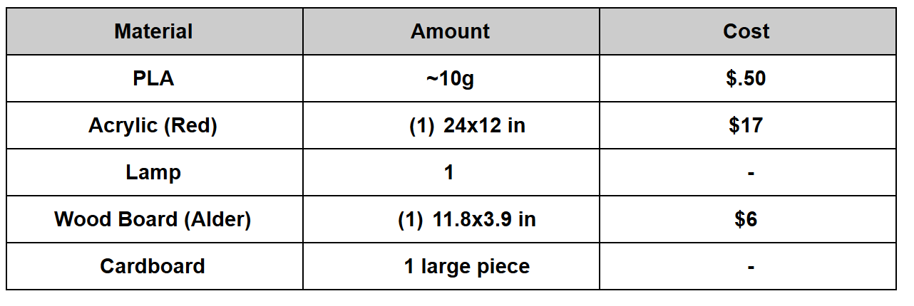